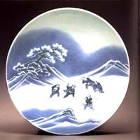

| Nabeshima
Sometuke Douji Yukigassen zu Sankyakutsuki Oohachi
Nabeshima Platter depicting a Snowball Fight in
Underglaze Blue (Sometsuke)
The
full name of this truly beautiful dish is "Large Three-legged
Nabeshima Platter depicting a Snowball Fight (in Underglaze Blue)".
Its dimensions are 7.8 cm (3 1/4") height x 29.7cm (11 3/4")
diameter. It was made in Japan in the Genroku Period, (1688-1703)
and is valued at $US400,000.
Nabeshima
ware was a type of very rare and expensive Imari porcelain
produced in the kilns of the Nabeshima clan. This type of ware was
presented as gifts to the elite classes by the feudal lord Nabeshima
Naoshige, who reserved ceramics made at his kilns for use as presentation
pieces. The very high quality porcelain used, as well as the high
quality cobalt underglaze colors and superb technique were a sure
sign of the elevated status of the giver. The most renown Nabeshima
wares were made at Okawachi village from about 1675 until the mid-eighteenth
century.
Images courtesy of Robert Yellin,
e-yakimono.net. Click to enlarge.
Typical Nabeshima colors consisted of overglaze enamel
red, yellow and green on a pure white porcelain background, or a
blue cobalt underglaze on white background as seen on the 'Snow
Platter' depicted here.
The
beauty of this dish hardly needs any explaining or interpretation.
Through the use of cobalt blue underglaze, the white of the porcelain
becomes snow. Snow can be discerned on the mountain peaks as well
as the branches of the tree in the background, probably indicating
freshly fallen snow. The children are obviously having a wonderful
time playing, throwing snowballs at each other.
More Articles
More Artists of the Week
|
{kind=link}
{kind=link}
{kind=link}